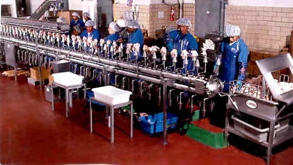
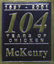

- Food Service
- Institutional
- Distributors

THE BEST DRESSED CHICKEN IN TOWN
McKenry Produce Company, Inc.
717 Willow Avenue
Knoxville, TN 37915
Supplying Fresh Poultry for:
|
THE BEST DRESSED CHICKEN IN TOWN McKenry Produce Company, Inc. 717 Willow Avenue Knoxville, TN 37915 |
|
 In 1995, McKenry enlarged its processing facility and added a large, climate-controlled loading dock. |
|
|
Fresh boneless breast is our speciality, but service and quality are the reasons McKenry is the leading poultry source in east Tennessee. Our modern processing plant in downtown Knoxville produces poultry products from chickens that arrive fresh from slaughter.  McKenry distributes directly to east Tennessee restaurants, or we can work with national chain distribution systems to supply products. Our dedicated staff and state-of-the-art equipment keep the Best Dressed Chicken In Town on the plates of restaurants from South Carolina to New York. Please visit our facility and discover what McKenry can do for you. |
Office: (865) 525-2111
Fax: (865) 546-2109